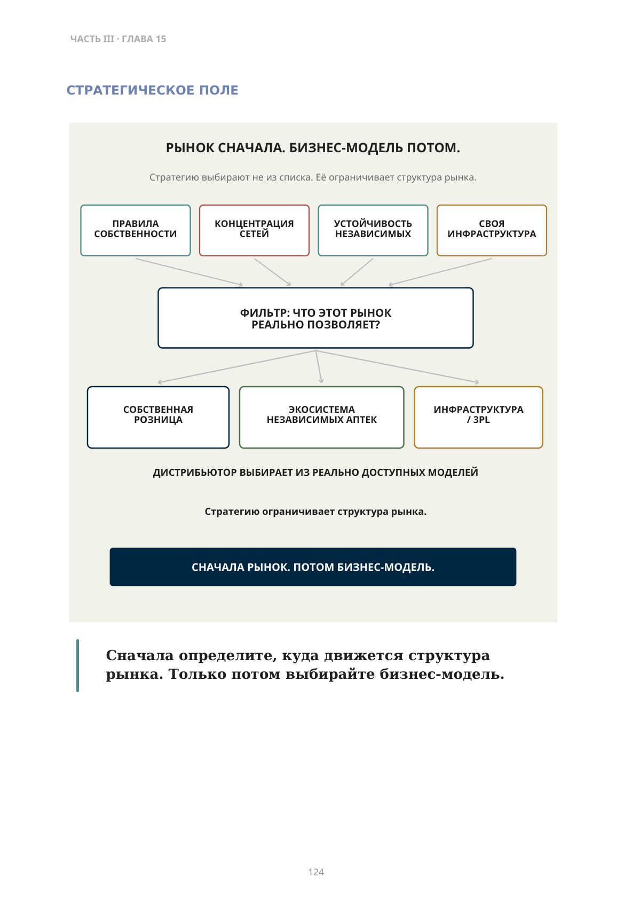
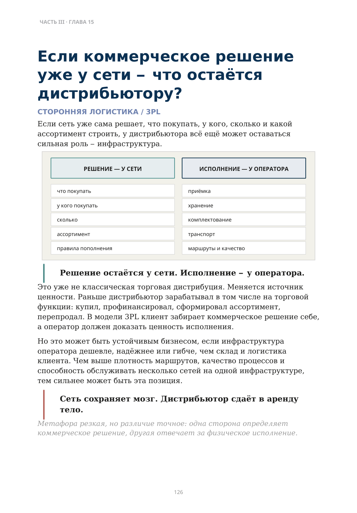

Три стратегических выбора
Собственная розница, экосистема независимых аптек или сторонняя логистика
У дистрибьютора нет одного правильного будущего.
Есть как минимум три принципиально разные роли:
- Стать собственником розничной сети.
- Построить экосистему вокруг независимых аптек.
- Стать оператором сторонней логистики и инфраструктуры (3PL).
Первый путь мы уже разобрали: купить аптеки недостаточно — нужно научиться мыслить как розница.
Собственная сеть даёт прямой доступ к клиентскому потоку и возможность контролировать розничные решения. Но вместе с этим дистрибьютор принимает на себя всю сложность розничного бизнеса — локации, ассортимент, персонал, клиентский опыт и экономику каждой точки.
Поэтому собственная розница — не «следующий уровень» автоматически. Это один из трёх разных ответов на изменение рынка.
Не начинайте с вопроса: «Что мы умеем?» Начните с вопроса: «Каким становится рынок?»
Если сети свободно консолидируются, собственная розница может становиться логичнее. Если независимые аптеки устойчивы, их можно усиливать общей инфраструктурой. Если сети уже контролируют коммерческие решения, но не хотят владеть всей физической логистикой, появляется пространство для 3PL.
Вопрос не в том, какой путь престижнее. Вопрос в том, какая функция останется оплачиваемой и труднозаменимой в будущей структуре рынка.
Регулирование тоже меняет доступные роли: оно может сохранять пространство для независимой собственности или ускорять консолидацию.
Сначала определите, куда движется структура рынка. Только потом выбирайте бизнес-модель.

Описание схемы
FIG_060: Сначала определите, куда движется структура
Схема предлагает сначала определить структуру рынка: правила собственности, конкуренцию каналов, устойчивость бизнес-модели и роль инфраструктуры; затем спросить, какие функции реально контролирует участник. Сила рынка следует за контролем критических функций.
Можно ли построить сеть, не покупая аптеки?
Да — если независимые аптеки получают через одного организатора часть преимуществ сети.
Дистрибьютор может объединить для них:
- закупки;
- склад и частое пополнение;
- товарный кредит;
- ИТ и автоматизированный заказ;
- СТМ;
- перераспределение;
- сервисы управления ассортиментом.
Юридически аптеки остаются независимыми. Экономически они начинают действовать как более крупная система.
Можно построить вокруг аптеки сильную инфраструктуру и всё равно не владеть самой аптекой.
Если собственник точки может завтра продать её другой сети, влияние дистрибьютора не равно собственности.
Поэтому здесь дистрибьютор строит не собственную розницу, а систему зависимости от общей инфраструктуры: чем больше ценности аптека получает через неё, тем дороже становится смена партнёра.
Как скорость, кредит, ИТ, эксклюзивность, объединение закупок и стоимость переключения формируют экономику этого пути — предмет следующей главы.
Если коммерческое решение уже у сети — что остаётся дистрибьютору?
Если сеть уже сама решает, что покупать, у кого, сколько и какой ассортимент строить, у дистрибьютора всё ещё может оставаться сильная роль — инфраструктура.
Решение остаётся у сети. Исполнение — у оператора.
Это уже не классическая торговая дистрибуция. Меняется источник ценности. Раньше дистрибьютор зарабатывал в том числе на торговой функции: купил, профинансировал, сформировал ассортимент, перепродал. В модели 3PL клиент забирает коммерческое решение себе, а оператор должен доказать ценность исполнения.
Но это может быть устойчивым бизнесом, если инфраструктура оператора дешевле, надёжнее или гибче, чем склад и логистика клиента. Чем выше плотность маршрутов, качество процессов и способность обслуживать несколько сетей на одной инфраструктуре, тем сильнее может быть эта позиция.
Сеть сохраняет мозг. Дистрибьютор сдаёт в аренду тело.
Метафора резкая, но различие точное: одна сторона определяет коммерческое решение, другая отвечает за физическое исполнение.

Описание схемы
FIG_061: Решение остаётся у сети, исполнение — у оператора
Две колонки разделяют решение и исполнение. Сеть сохраняет решения «что покупать, у кого, сколько, ассортимент и правила пополнения»; оператор выполняет приёмку, хранение, комплектование, транспорт и качество маршрута.
Какой путь соответствует вашему рынку?
| ЧТО ПРОИСХОДИТ НА РЫНКЕ? | КАКОЙ ПУТЬ ЛОГИЧНЕЕ? | ЧТО НУЖНО ДОКАЗАТЬ? |
|---|---|---|
| Сети свободно консолидируются | Собственная розница | Умеем привлекать клиента, а не только снабжать точку |
| Независимые аптеки устойчивы | Экосистема независимых аптек | Создаём преимущества, которые одиночная аптека не получает сама |
| Сети контролируют коммерческие решения | Сторонняя логистика / 3PL | Исполнение лучше или дешевле собственной инфраструктуры клиента |
Перед крупной инвестицией остаются три вопроса:
- Кто через пять-десять лет будет контролировать клиентский поток?
- Какая функция останется действительно ценной для дистрибьютора?
- Не становимся ли мы всё лучше в бизнес-модели, для которой рынок оставляет всё меньше места?
Что мы хотим контролировать через пять-десять лет?
Это важнее текущей рентабельности отдельного направления.
Компания может сегодня хорошо зарабатывать на модели, спрос на которую структурно сокращается, и одновременно недоинвестировать в функцию, которая завтра станет главным источником её силы.
Долгосрочное преимущество часто определяется не количеством функций, а контролем той функции, которая критична именно для этой структуры рынка.
Поэтому главный вопрос собственника:
Какую критическую функцию мы хотим контролировать через пять-десять лет?
Если таким путём становится экосистема независимых аптек, следующий вопрос уже не стратегический, а операционный.